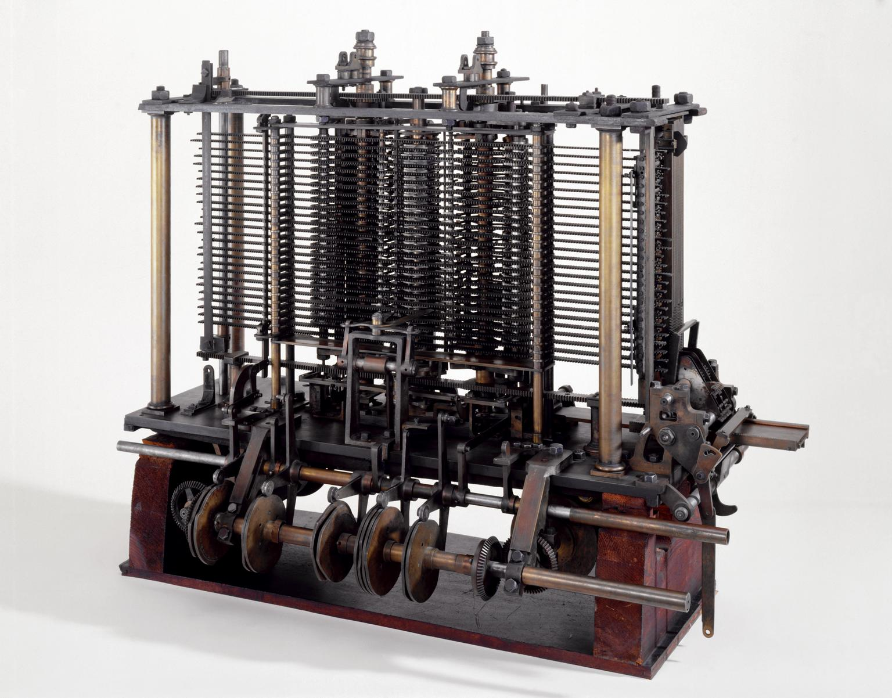
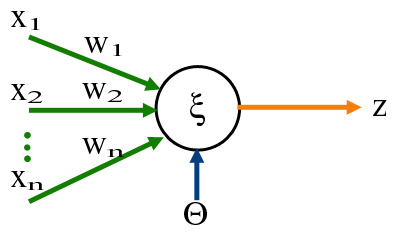
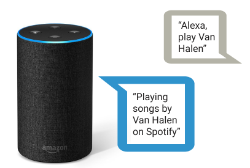
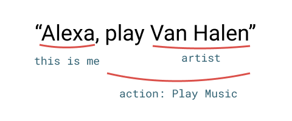
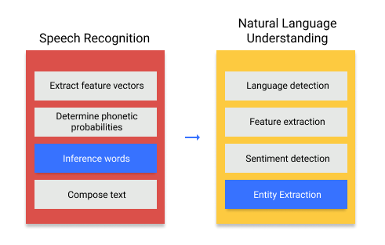

The omnipresence of technology nowadays has made it commonplace to read news about AI, just a quick glance at today’s headlines, and I get:
Topics from business, manufacturing, supply chain, medicine and biotech and even defense are covered in those news headlines, definitively the advancements on the fields of artificial intelligence, in particular machine learning and deep neural networks have permeated into our daily lives and are here to stay. But, do the general population know what are we talking about when we say “an AI”? I assume most people correctly imagine a computer algorithm or perhaps the more adventurous minds think of a physical machine, an advanced computer entity or even a robot, getting smarter by itself with every use-case we throw at it. And most people will be right, when “an AI” is mentioned it is indeed an algorithm run by a computer, and there is where the boundary of their knowledge lies.
They say that the best way to learn something is to try to explain it, so in a personal exercise I will try to do an ELI5 (Explain it Like I am 5) version of what is a neural network.
Let’s start with a little history, humans have been tinkering with the idea of an intelligent machine for a while now, some even say that the idea of artificial intelligence was conceived by the ancient greeks (source), and several attempts at devising “intelligent” machines have been made through history, a notable one was ‘The Analytical Engine’ created by Charles Babbage in 1837:

The Analytical Engine of Charles Babbage - 1837
Then, in the middle of last century by trying to create a model of how our brain works, Neural Networks were born. Around that time, Frank Rosenblatt at Cornell trying to understand the simple decision system present in the eye of a common housefly, proposed the idea of a perceptron, a very simple system that processes certain inputs with basic math operations and produces an output.

To illustrate, let’s say that the brain of the housefly is a perceptron, its inputs are whatever values are produced by the multiple cells in its eyes, when the eye cell detects “something” it’s output will be a 1, and if there is nothing a 0. Then the combination of all those inputs can be processed by the perceptron (the fly brain), and the output is a simple 0 or 1 value. If it is a 1 then the brain is telling the fly to flee and if it is a 0 it means it is safe to stay where it is.
We can imagine then that if many of the eye cells of the fly produce 1s, it means that an object is quite near, and therefore the perceptron will calculate a 1, it is time to flee.

The perceptron is just a math operation, one that multiplies certain input values with preset “parameters” (called weights) and adds up the resulting multiplications to generate a value.
Then the magic spark was ignited, the parameters (weights) of the perceptron could be “learnt” by a process of minimizing the difference between known results of particular observations, and what the perceptron is actually calculating. It is this process of learning what we call training the neural network.
This idea is so powerful that even today it is one of the fundamental building blocks of what we call AI.
From this I will try to explain how this simple concept can have such diverse applications as natural language processing (think Alexa), image recognition like medical diagnosis from a CTR scan, autonomous vehicles, etc.
A basic neural network is a combination of perceptrons in different arrangements, the perceptron therefore was downgraded from “fly brain” to “network neuron”.

A neural network has different components, in its basic form it has:
- Input
- Hidden layers
- Output

The inputs of a neural network are in their essence just numbers, therefore anything that can be converted to a number can become an input. Letters in a text, pixels in an image, frequencies in a sound wave, values from a sensor, etc. are all different things that when converted to a numerical value serve as inputs for the neural network. This is one of the reasons why applications of neural networks are so diverse.
Inputs can be as many as one need for the task at hand, from maybe 9 inputs to teach a neural network how to play tic-tac-toe to thousands of pixels from a camera for an autonomous vehicle. Since the input of a perceptron needs to be a single value, if for example a color pixel is chosen as input, it most likely will be broken into three different values; its red, green and blue components, hence each pixel will become 3 different inputs for the neural network.
Hidden layers
A “layer” within a neural network is just a group of perceptrons that all perform the same exact mathematical operation to the inputs and produce an output. The catch is that each of them have different weights (parameters), therefore their output for a given input will be different amongst them. There are many types of layers, the most typical of them being a “dense” layer, which is another word to say that all the inputs are connected to all the neurons (individual perceptrons), and as said before, each of these connections have a weight associated with it, so that the operation that each neuron performs is a simple weighted sum of all the inputs.

The hidden layer is then typically connected to another dense layer, and their connection means that each output of a neuron from the first layer is treated effectively as an input for the subsequent one, and it is thus connected to every neuron.
A neural network can have from one to as many layers as one can think, and the number of layers depends solely on the experience we have gathered on the particular problem we would like to solve.
Another critical parameter of a hidden layer is the number of neurons it has, and again, we need to rely on experience to determine how many neurons are needed for a given problem. I have seen networks that vary from a couple of neurons to the thousands. And of course each hidden layer can have as many neurons as we please, so the number of combinations is vast.
To the number of layers, their type and how many neurons each have, is what we call the network topology (including the number of inputs and outputs).
Output
At the very end of the chain, another layer lies (which behaves just like a hidden layer), but has the peculiarity that it is the final layer, and therefore whatever it calculates will be the output values of the whole network. The number of outputs the network has is a function of the problem we would like to solve. It could be as simple as one output, with its value representing a probability of an action (like in the case of the flee reaction of the housefly), to many outputs, perhaps if our network is trying to distinguish images of animals, one would have an output for each animal species, and the output would represent how much confidence the network has that the particular image belongs to the corresponding species.
As we said, the neural network is just a collection of individual neurons, doing basic math operations on certain inputs in series of layers that eventually generate an output. This mesh of neurons is then “trained” on certain output values from known cases of the inputs; once it has learned it can then process new inputs, values that it has never seen before with surprisingly accurate results.
Many of the problems neural networks solve, could be certainly worked out by other algorithms, however, since neural networks are in their core very basic operations, once trained, they are extremely efficient, hence much quicker and economical to produce results.
There are a few more details on how a simple neural network operate that I purposedly left out to make this explanation as simple as possible. Thinks like biases, the activation functions and the math behind learning, the backpropagation algorithm, I will leave to a more in depth article. I will also write (perhaps in a series) about the more complex topologies combining different types of layers and other building blocks, a part from the perceptron.

Things like “Alexa”, are a bit more complex, but work on exactly the same principles. Let’s break down for example the case of asking “Alexa” to play a song in spotify. Alexa uses several different neural networks to acomplish this:
1. Speech recognition
As a basic input we have our speech: the command “Alexa, play Van Halen”. This might seem quite simple for us humans to process, but for a machine is an incredible difficult feat to be able to understand speech, things like each individual voice timbre, entonation, intention and many more nuances of human spoken language make it so that traditional algorithms have struggled a lot with this. In our simplified example let’s say that we use a neural network to transform our spoken speech into text characters a computer is much more familiarized to learn.
2. Understanding what we mean (Natural Language Understanding)
Once the previous network managed to succesfuly convert our spoken words into text, there comes the even more difficult task of making sense of what we said. Things that we humans take for granted such as context, intonation and non verbal communication, help give our words meaning in a very subtle, but powerful way, a machine will have to do with much less information to correctly understand what we mean. It has to correctly identify the intention of our sentence and the subject or entities of what we mean.

The neural network has to identify that it received a command (by identifying its name), the command (“play music”), and our choice (“Van Halen”). And it does so by means of simple math operations as described before. Of course the network involved is quite complex and has different types of neurons and connection types, but the underlying principles remain.
3. Replying to us
Once Alexa understood what we meant, it then proceeds to execute the action of the command it interpreted and it replies to us in turn using natural language. This is accomplished using a technique called speech synthesis, things like pitch, duration and intensity of the words and phonems are selected based on the “meaning” of what Alexa will respond to us: “Playing songs by Van Halen on Spotify” sounding quite naturally. And all is accomplished with neural networks executing many simple math operations.

Although it seems quite complex, the process for AI to understand us can be boiled down to simple math operations
Of course Amazon’s Alexa neural networks have undergone quite a lot of training to get to the level where they are, the beauty is that once trained, to perform their magic they just need a few mathematical operations.
As said before, I will continue to write about the basics of neural networks, the next article in the series will dive a bit deeper into the math behind a basic neural network.
Vera Breen
Fantasy Romance and Erotica Author